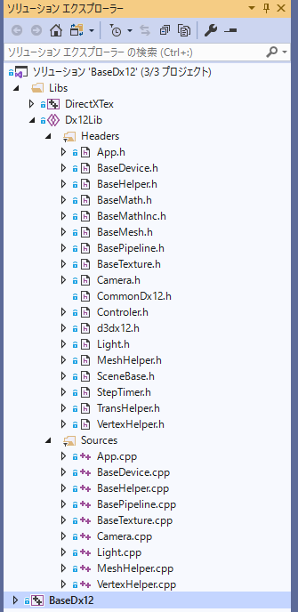

BaseDx12（Dx12研究とフレームワーク）
【第1部】シンプルバージョン編
１１０１．シンプルな三角形の描画（１）
サンプルの実行
BaseDx12にはシンプルバージョンとフルバージョンという2つのバージョンがあります。前者はDx12の機能を実装するためのサポート的な内容となります。ですので物理エンジンや補間処理などの機能は持ってません。（簡単な衝突判定は持っています）。
後者はDx12の知識はなくてもC++の知識があれば、コンテンツをある程度実装できると思います。こちらには物理エンジン、補間処理、ユーティリティ的な行動などが実装されます。また、モデルの描画やモデルのアニメーションなども、比較的簡単に実装できます。
【第1部】シンプルバージョン編では、前者の解説です。フルバージョンを試してみたい方は【第2部】フルバージョン編を参照してください。
SimpleSample101というディレクトリ内のBaseDx12.slnをVS2019で開いてください。
リビルドして実行すると、以下の画面が出てきます。

図1101a
シンプルバージョンについて
このサンプルの説明を始める前に、BaseDx12フレームワークのシンプルバージョンについて少し説明します。もしよければ、本家、マイクロソフト社のサンプル、DirectX-Graphics-Samplesをダウンロードし（GitHub公開されています。検索ですぐに見つかります）、その中のD3D12HelloWorld内のHelloTriangleと比較しながら見ていただくと良いと思います。
Dx12でGPUにレンダリングするには、様々な設定が必要です。
主なものを以下にあげます。
＊Dx12デバイス ＊コマンドキュー ＊スワップチェーン ＊デスクプリタヒープ ＊レンダーターゲットビュー ＊コマンドアロケーター ＊ルートシグネチャー ＊コマンドリスト ＊パイプラインステート ＊シェーダ（最低限、頂点とピクセル） ＊メッシュ ＊テクスチャ（必要に応じて）とシェーダリソースビュー ＊サンプラー（必要に応じて）
HelloTriangleのソースを見るとわかりますが、たった一つの三角形を描画するだけなのに、実に多くの準備や命令が必要なのがわかります。
BaseDx12シンプルバージョンでは、プログラマの自由度を最大限守りながら、どうしたら効率よく、リソースの作成やコマンド発行できるか、を考えて作成したつもりです。
ライブラリを見る
まず最初にソリューション内にあるLibsというフィルタを見てください。閉じている場合はクリックすると、以下の様な内容になっています。

図1101b
シンプルとはいえ、結構な量のファイル構成になっています。
それぞれ、意味があって記述しているので、皆重要は重要なのですが、リソース構築時はBaseDevice.h/cppとBasePipeline.h/cppが重要な役割をはたします。
ウインドウの作成とメッセージループ
まず、ライブラリ側ではなくBaseDx12プロジェクト内にある、WinMain.cppを見てください。ここでは、ウインドウを作成して、メッセージループを起動します。その際、シーンというオブジェクトを作成します。その記述が、MainLoop()関数内にあります。以下が実体です。
Dx12にかかわる部分は、赤くなっています。
int MainLoop(HINSTANCE hInstance, HWND hWnd, int nCmdShow, int iClientWidth, int iClientHeight) {
//終了コード
int retCode = 0;
//ウインドウ情報。メッセージボックス表示チェックに使用
WINDOWINFO winInfo;
ZeroMemory(&winInfo, sizeof(winInfo));
//例外処理開始
try {
//COMの初期化
//サウンドなどで使用する
if (FAILED(::CoInitialize(nullptr))) {
// 初期化失敗
throw exception("Com初期化に失敗しました。");
}
basedx12::Scene scene;
basedx12::App::Init(hWnd, &scene, hInstance, nCmdShow, iClientWidth, iClientHeight);
//メッセージループ
MSG msg = { 0 };
while (WM_QUIT != msg.message) {
//キー状態が何もなければウインドウメッセージを得る
if (PeekMessage(&msg, nullptr, 0, 0, PM_REMOVE)) {
TranslateMessage(&msg);
DispatchMessage(&msg);
}
//更新描画処理
basedx12::App::UpdateDraw();
}
//msg.wParamには終了コードが入っている
basedx12::App::Destroy();
retCode = (int)msg.wParam;
}
catch (exception & e) {
//STLエラー
//マルチバイトバージョンのメッセージボックスを呼ぶ
if (GetWindowInfo(hWnd, &winInfo)) {
MessageBoxA(hWnd, e.what(), "エラー", MB_OK);
}
else {
MessageBoxA(nullptr, e.what(), "エラー", MB_OK);
}
retCode = 1;
}
catch (...) {
//原因不明失敗した
if (GetWindowInfo(hWnd, &winInfo)) {
MessageBox(hWnd, L"原因不明のエラーです", L"エラー", MB_OK);
}
else {
MessageBox(nullptr, L"原因不明のエラーです", L"エラー", MB_OK);
}
retCode = 1;
}
//例外処理終了
//COMのリリース
::CoUninitialize();
return retCode;
}
アプリケーションクラス
ここで、構築部を見てみましょう
basedx12::Scene scene;
basedx12::App::Init(hWnd, &scene, hInstance, nCmdShow, iClientWidth, iClientHeight);
basedx12というのはBaseDx12全体のネームスペースです。ライブラリ及びコンテンツは、すべてこのネームスペースに含まれます。
しかしWinMain.cpp内の関数はグローバル領域に置かれますので、basedx12::Scene scene;という記述が必要になります。
sceneインスタンスを定義したら、そのポインタを渡してbasedx12::App::Init()関数を呼び出します。
Appクラスはいわゆるアプリケーションクラスなのですが、BaseDx12では、クラスの実体は作らずにApp::Init()のように、すべてスタティック呼び出しの関数が含まれます。そういう意味ではクラスではなくネームスペースでもよいのですが、ネームスペースですとヘッダファイルへの記述が、ちょっとややこしくなるので、クラスにしてあります。
basedx12::App::Init()関数内ではBaseDx12プロジェクト内のScene.h/cppに記述がある、Scene::OnInit()関数を呼び出します。
今後、プロジェクト側をコンテンツ側と称します。同様、フレームワーク側はライブラリ側と称します。
Sceneクラス
Sceneクラスは、以下のような宣言になっています。
class Scene :public SceneBase {
ComPtr<ID3D12PipelineState> m_pipelineState;
shared_ptr<BaseMesh> m_baseMesh;
public:
Scene() :SceneBase() {}
virtual ~Scene() {}
virtual void OnInit()override;
virtual void OnInitAssets()override;
virtual void OnUpdate()override;
virtual void OnDraw()override;
virtual void OnDestroy()override;
};
SceneBaseクラスは、ライブラリ部のSceneBase.h/cppに記述があります。ゲームシーンを表現すると思ってもらえればよいです。
この中で
virtual void OnInit()override;
この関数がbasedx12::App::Init()関数から呼び出されます。
Scene::OnInit()関数の記述は以下になります。
void Scene::OnInit() {
ResetActiveBaseDevice<GameDevice>(2);
}
この関数は、指定のクラス（ここではGameDeviceクラス）のインスタンスを作成してAppクラスに登録します。こうすることによりAppクラス経由でGameDeviceクラスのインスタンスにアクセスできる形になります。
ResetActiveBaseDevice()関数では、そのあとGameDevice::OnInit()関数を呼び出します。
この関数こそが、Dx12のリソース群を構築すべき関数となります。
GameDeviceクラスはコンテンツ部にあるGameDevice.h/cppです。次項では、その中身を詳しく見てみましょう。